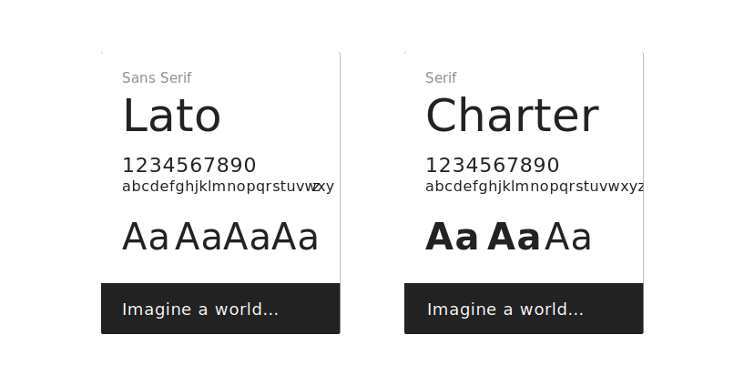
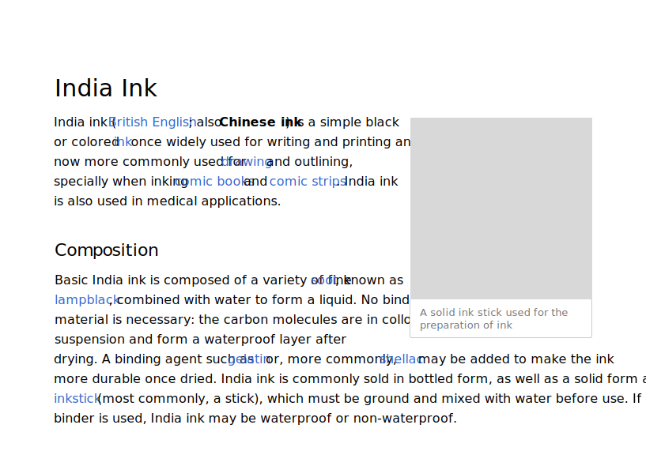

Typography
Wikimedia projects rely on writing and reading. Typography is a key component of their design. Consider the typeface, size, style, and spacing of your text to achieve good readability. Our typographic choices make our content accessible, present it in a neutral way, and convey its reliability.
Readability
Content should be readable by everyone, regardless of their circumstances. Color blindess or the sun on a device's screen should not be barriers to access.

Grid
Text layout is key to readability. Typographers and typesetters have been using grids to lay out text for centuries. We lay our content on a horizontal and a vertical grid.
The whitespace between sections, complimentary block elements like images, and headings should be consistent and proportional to rest of the whitespace.
Contrast
When using text, make sure that it provides enough contrast to be read comfortably. Check the contrast between the colors used for the text and its background. Provide at least level AA sufficient contrast (4.5:1). The color palette provides the contrast levels for pure white and black surfaces, but you need to ensure the contrast on other combinations.

Tracking and leading
Text spacing. How text is placed in space can affect its readability. Follow these considerations for text paragraphs:
- Line length should be no longer than 75 characters.
- Line height should be 1.6 times the size of the font used.
Dynamic text
Content will be available in multiple languages, and text length will vary for pieces of content across languages. Avoid designing interfaces that depend on certain expectations about text length.

Here are few ways to tackle dynamic text:
- Uncrowded user interface. Design with an eye for simplicity. Consider reducing the number of elements to ensure the remaining ones have enough room.
- Dynamic layout. Make containers expandable, so that they can fit the content.
- Dynamic text. Adjust the size depending on the content. Use a smaller font-size for long content.
- Clipping. Clip the text with ellipsis, only if there is no risk of missing important information or the complete information is reachable through a clear alternative means.
Typefaces
Charter (supported by the Charis SIL font implementation) and Lato are the recommended typefaces, when available.
- Charter is a serif typeface designed by Matthew Carter in 1987. Charter has a simplified and clean structure that works well, even on low resolution displays. Although Bitstream Charter is the original implementation for Charter, we recommend using Charis SIL since it provides a wider Unicode support.
- Lato is a sans-serif typeface designed by Łukasz Dziedzic in 2010. Lato provides good readability even at small sizes.
These fonts are provided as a reference, but you may use similar criteria when those fonts are not available in your context.
Font selection criteria
Font selection depends on availability. Fonts are not always available for all scripts or all devices. The criteria for font selection is the following:
- Readability. Fonts with a bigger x-height and open shapes are preferred.
- Neutral aspect. The font should work with many different kinds of content without adding a particular voice to it.
- Simple shapes. Fonts with less complex shapes work better at smaller sizes, on low-resolution devices, and reduce printing costs.
- Open. Open source fonts are preferred to align with the open knowledge they deliver.
To extend the font family to new scripts or devices, the above criteria should be followed. Common cases in which you need to look for alternatives are:
Lack of a font delivery mechanism. In cases where custom fonts cannot be delivered to the user (e.g., through web fonts technology), you need to define alternatives. Default fonts such as Lato and Charter/Charis can still be recommended as primary options for users that installed those fonts themselves. A wider set of fallback options from those available in the user device may be needed. Possible fallback options:
- Georgia (present in many devices) can be a fallback for Charter.
- Device default sans-serif font would be used in the absence of Lato.
Language support. There is no font that supports all languages. Individual language communities can identify fonts that better support their languages, taking into account the above criteria. Possible fallback option incude:
- The Noto family provides a great coverage of languages, providing good alternatives for both serif and sans-serif typefaces.
Use of styles
The recommended styles are intended to optimize readability of Wikipedia’s dense encyclopedic content.
Using the body text size of 16 scale-independent pixels (sp) as a base, a typographic scale of 1.125 was used to derive a harmonious rhythm between font-sizes for various headings and body copy.

The scale-independent pixels can result in a different number of actual pixels in the user screen due to screen density or user preferences. A 16 sp text is rendered as 16 px in a 1x device at standard zoom level, but it becomes 21 px in a 2x device (or when zoomed 200% on a 1x device).
Common text styles are based on the defined scale to clearly communicate the content hierarchy.